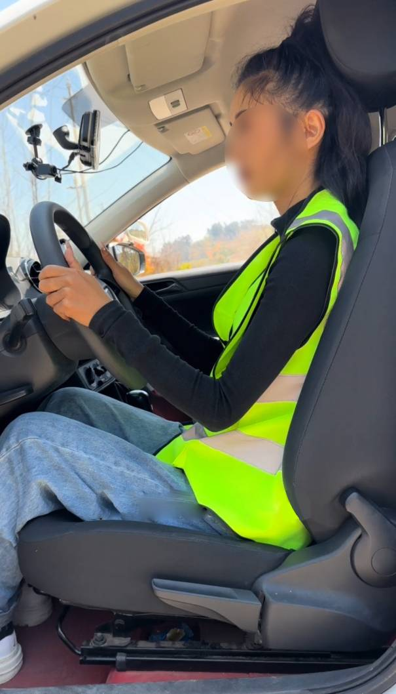
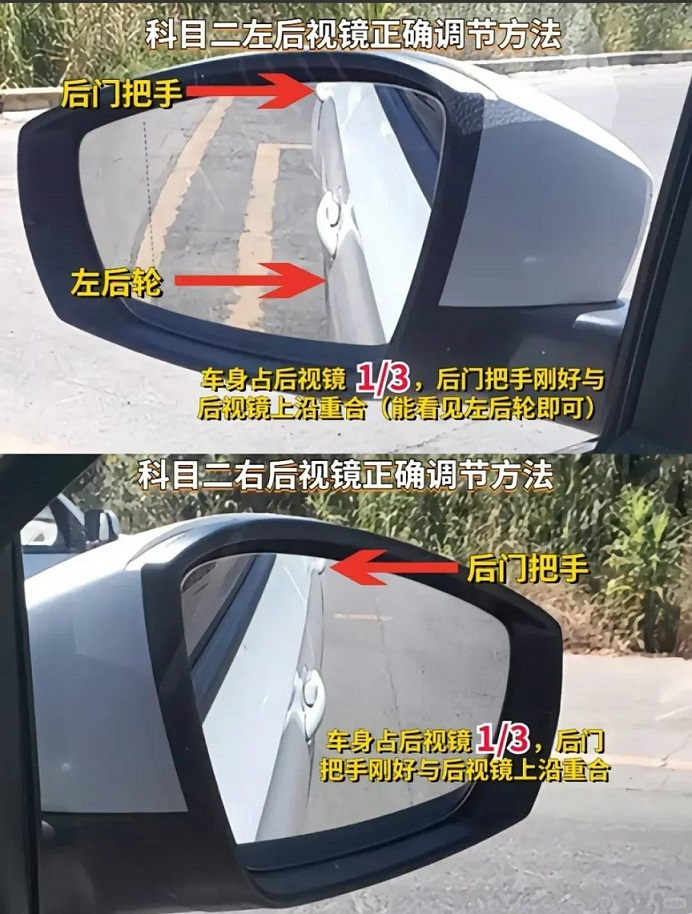

科目二上车准备全攻略，让你轻松应对考试
之前一直在强调，科目二每个项目的考试细节以及攻略。但是实际上，有一个事情非常重要
那就是：上车准备事情到底做好没？
要知道，每个项目的点位准不准，考的就是上车准备的细节，所以这些操作非常重要
9大细节，千万别漏了！
1️⃣调整座椅
顺序按先靠背-再高低-后前后，靠背斜90°，头顶一拳，（或者：头顶距遮阳板1-2指距离，肚子距离方向盘约2拳，160以下建议带1-2个坐垫）
如图▼

2️⃣调整后视镜
先左镜，先调上下再调左右，右镜同理：后门把手位于镜上沿，车身约占后视镜1/3，前门把手位于左、右后视镜靠内侧1/3段中间
如图▼

3️⃣检查车辆
上车先检查仪表盘，指针1代表已点火，指针0代表熄火，需要挂P挡再点火（C1要确保挡位在空挡）；检查灯光是否复位
4️⃣系上安全带
一定要系好安全带再开始考试，不然直接就是挂科，系安全带扣上之后要听到‘咔哒’的声音，并且你用力拉也不会拉出来就可以了。
5️⃣试车
试踩刹车，试打方向盘，试踩离合，看看这三个关键‘部件’的松紧程度，以便更快适应车辆，上个人考完车可能没停正，不正可以把车调正再开始，提示开始考试不用着急，全部准备好再起步就行
6️⃣踩刹车/踩离合
用脚尖踩住刹车右下角区域，脚后跟顶住
踩离合同样，用前脚掌踩，脚后跟顶住
7️⃣准备考试
准备好就和安全员说准备好了，按开始键，听到语音播报，看前方摄像头，拍完照会提示321，请开启考试
8️⃣起步动作
C1：挂1挡，松手刹，半联动起步
C2：挂D档前进档，松手刹 (记得要松到底❗)
9️⃣调整呼吸
深呼吸，调整心态，一定要放松，仔细回想下个项目操作步骤，不紧张就成功一半了